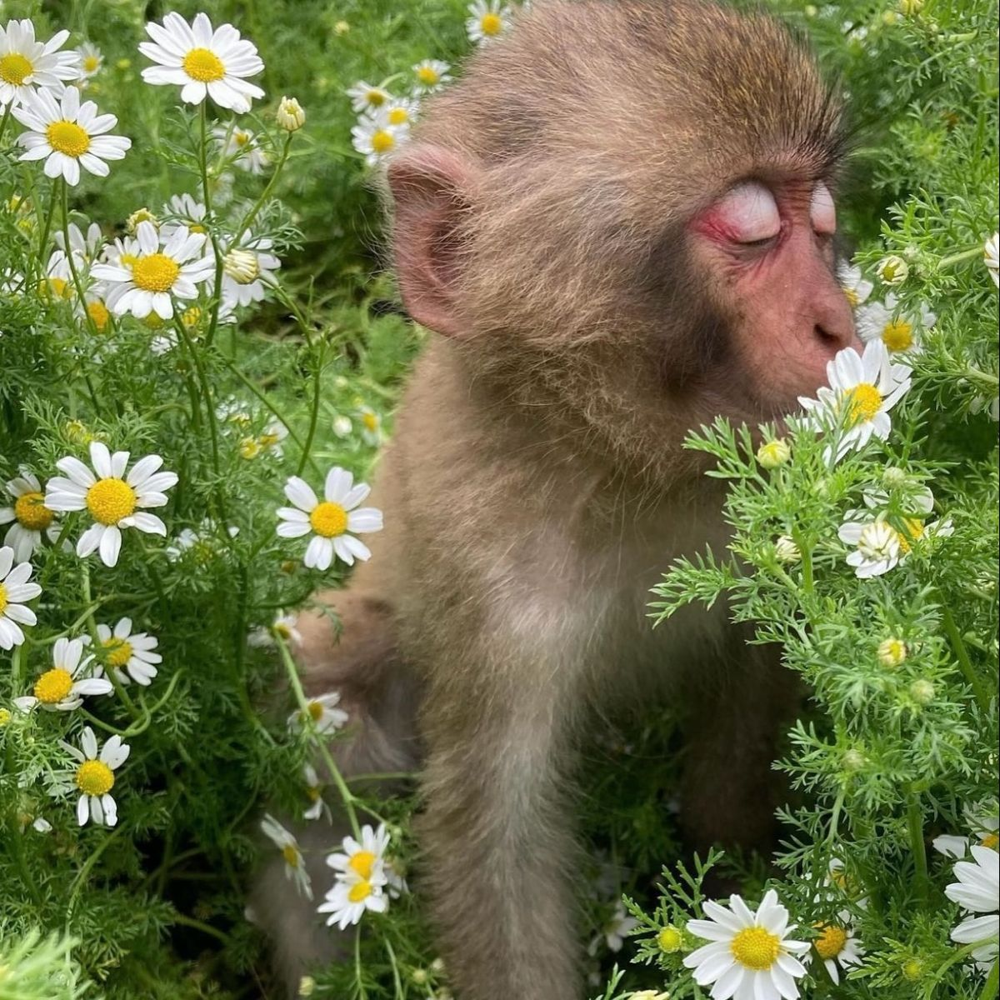
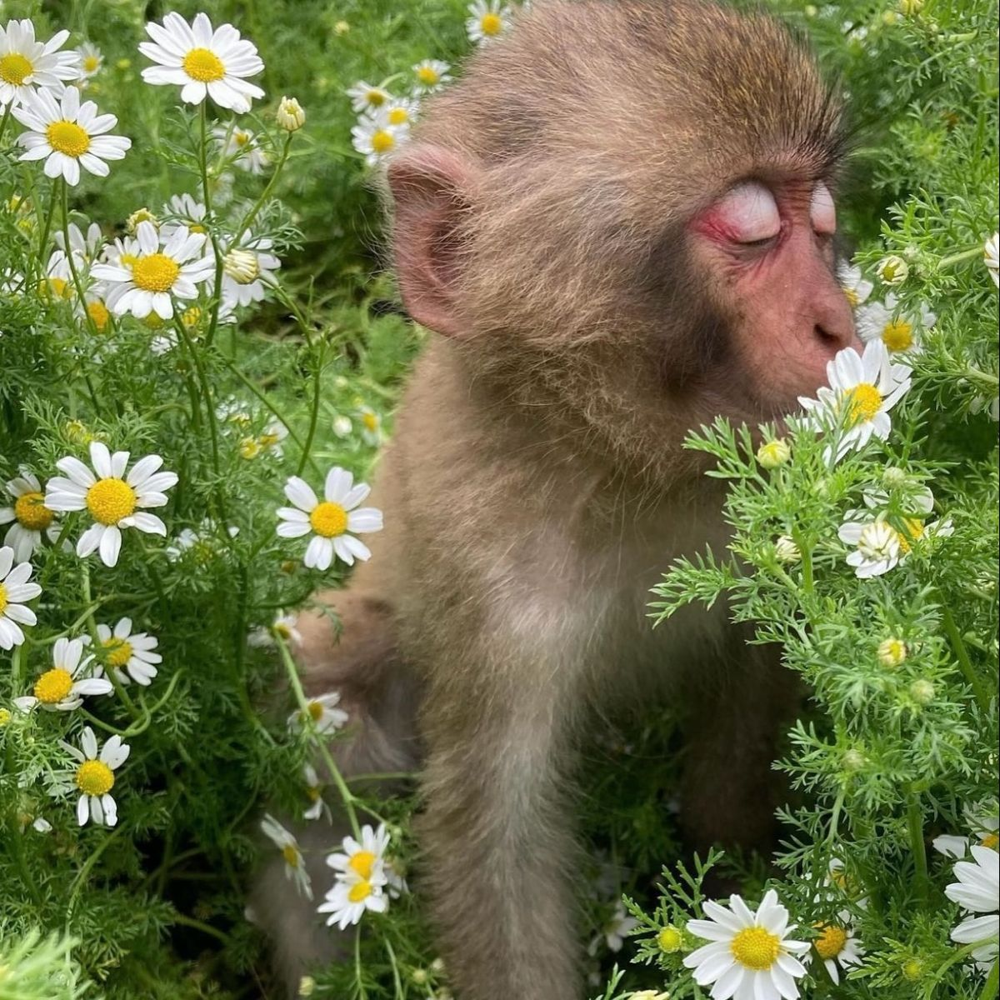

How to Make Banana Bread!
*+:｡.｡.𖥔 ݁ ˖𓂃.☘︎ ݁˖｡⊹ ࣪ ˖.｡:+*

Ingredients:
| ingridient name |
measurements |
| ♥︎ unsalted butter, |
➜ 1/2 cup |
| ♥︎ gradnulated sugar |
➜1 cup |
| ♥︎large eggs |
➜ 2 |
| ♥︎all purpose flower |
➜ 2 cups |
| ♥︎ baking soda |
➜1 tsp |
| ♥︎salt |
➜1/2 tsp |
| ♥︎bananas |
➜ 3-4 |
| ♥︎vanilla |
➜1 tsp |
- Recipe #1
Steps
-
Preheat the oven to 350 degrees and line two 8x4 bread pans with parchment paper (or grease well with butter or baking spray).*
-
In a medium sized bowl, use a fork to mash the bananas until they are well mashed (I like them to be well mashed with small bits of banana pieces for texture). Set aside.
-
In a separate bowl, use a hand mixer or standing mixer to cream the butter and sugar together.
-
Once combined, add in the eggs. Cream the mixture until well combined.
-
Next, add in the flour, baking soda, and salt. Mix until combined.
-
Lastly, add in the mashed bananas and the vanilla extract. Mix until all the bananas have been incorporated into the batter.
-
Divide the batter evenly between the two bread pans and bake for about 35-40 minutes, or until the top is puffed, brown, and a cake tester comes out clean when inserted in the center.**
-
Allow the bread to cool for about 5-10 minutes in the pan, then remove the banana bread from the loaf pans and allow them to continue cooling on a wire rack.
-
Serve warm, room temperature, or cold
 warning: DO NOT make this banana bread around others or else
THIS will happen to you
warning: DO NOT make this banana bread around others or else
THIS will happen to you